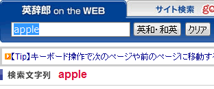
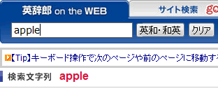

【Tip】キーボード操作で検索窓に一瞬にしてもどる方法
■ 『英辞郎 on the WEB』の検索結果には、最大 50 件の検索結果が表示されます。上から順に検索結果を見ていくと、次に別のキーワードで検索したくなったときに、マウスやホイールなどを使って、ページ上部または下部の検索窓にスクロールして移動しなくてはいけません。そこからさらに、マウスで検索窓をクリックし、検索窓に残ったキーワードを削除して、新しいキーワードを入力するという手順を踏むことになります。キーボードを駆使して、仕事の効率を上げたいとお考えの方にはとても鬱陶しい作業です。
コンピュータに慣れた方たちの中には、極力マウスを使わずに、複数のキーを同時に押すようなキーボード操作（ショートカットやキーバインド、キーコンビネーションとも呼びます）で作業効率を上げたいと思われる方が多いのですが、『英辞郎 on the WEB』でもこうしたショートカットをサポートしています。以下の、ショートカットで、検索結果ページ中のどこにいようと、検索窓に一瞬にしてもどることができます。
-
Windows（Internet Explorer）の場合：
Alt + E検索結果ページ閲覧中に、Alt のキーを押しながら、E のキーを押してください -
Windows（Firefox、Google Chrome） の場合：
Alt + Shift + E検索結果ページ閲覧中に、Alt のキーを押しながら、Shift と E のキーを押してください -
Macintosh の場合：
control + E検索結果ページ閲覧中に、 control のキーを押しながら、E のキーを押してください

移動したときには、検索窓は上の図のような状態になり、前回のキーワード（閲覧中の検索結果ページを表示するために使ったキーワード。上の図で言えば、「apple」）が選択された状態で表示されます。
次にまったく別のキーワードで検索をするのであれば、そのまま次のキーワードをキーボードで入力すれば、選択されたキーワードはすぐに上書きされます。表示されているキーワードに新たなキーワードを追加して絞り込み検索などをしたい場合は、 → キーを押して、選択された文字列の末尾にカーソルを移動することができます（下の図のような状態になります）。

Windows および Macintosh 用の主要なブラウザでは、問題なく動作することを確認していますが、一部ブラウザによっては、期待される動きにならない場合があります。あらかじめご容赦ください。
- Macintosh：Safari（検索窓以外の部分にフォーカスが移っていれば、検索窓に移動。ただしキーワードは選択された状態ではない）
- Windows / Macintosh：Opera では、動作しません
ショートカットは、これ以外にも「キーボード操作で次のページや前のページに移動することのできるショートカット」もありますので、こちらもご参照ください。